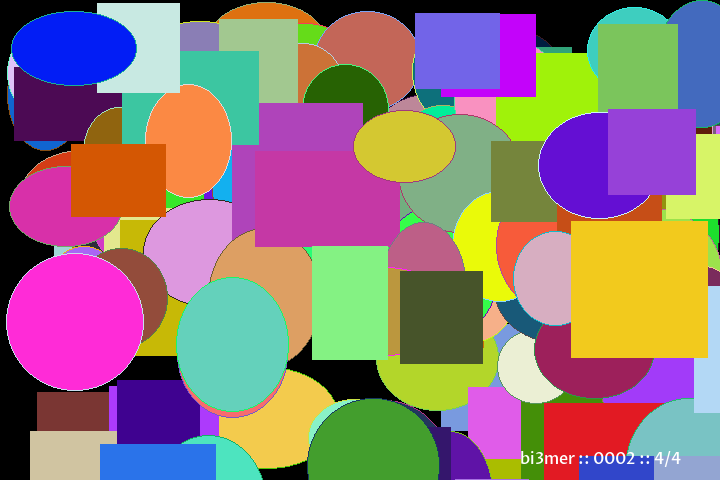
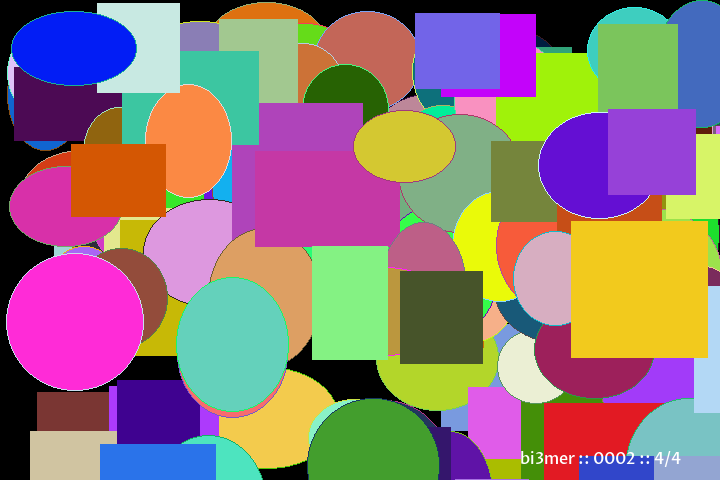

This is the first of what we'll likely be a series of blog posts on generative art, specifically images. At the start, everything will be very simple. This is mainly because the topic is new to me and the library we're going to use to generate images is also new to me. Speaking of, we're going to be using Python and Pillow to generate images; at least at the start, we'll see where we go. To start, I want to break this post into two parts: (1) pseudo-random and (2) generating a simple image with circles and squares.
Pseudo Random
Pseudo-random refers to the reality that nothing is ever truly random when it comes to computation. This is because we need to write code to generate the randomness which is inherently not random. The way we get around this is through functions that appear random to us but are pseudo-random because they output the same value every time for the same input. In the context of generative art, this isn't necessarily a bad thing. A minecraft world will always be the same if you give it the same seed. If we seed are random number generator with the same seed, we should get the same output every time.
Luckily, Python comes with a Random module that we can easily use.
1 2 3 4 5 | import random random.seed(1) print(random.random()) ==> 0.13436424411240122 |
On line 1, we import the random module. On line 2, we set the seed. On line 3, we ask for a random number between 0 and 1. If you are using the same interpreter as me, then you should get the same result of 0.13436424411240122. With this we will be able to generate multiple, different images using the same code. The trick will be to generate images that are different enough between seeds to be interesting. Unfortunately, I cannot find where the following analogy came from directly but I'm pretty sure it comes from Gillian Smith. A generator can produce millions of different images. The problem is that they may be like different bowls of oatmeal. I can show you two images of oatmeal and it will be very hard to say what the difference is. If the generator falls into this trap, then, for the user, it is as if the generator only produced one image of oatmeal rather than a million. For each seed, the generator should generate images that are noticeably different.
Generating Circles and Squares
Today, we do not have the high bar of creating a generator that can make a million different images that are noticeably different. The only goal we have is to generate an image with some circles and squares. Below is all the code for the final script. Feel free to peruse, if you wish. Below we'll go over the details and then the results. As a note, I'm starting off with this tutorial and building from there.
1 2 3 4 5 6 7 8 9 10 11 12 13 14 15 16 17 18 19 20 21 22 23 24 25 26 27 28 29 30 31 32 33 34 35 36 37 38 39 40 41 42 43 44 45 46 47 48 49 50 51 52 53 54 55 56 | from random import seed, randint, random from PIL import Image, ImageDraw, ImageFont TOTAL_RUNS = 4 font = ImageFont.truetype("ProzaLibre-Medium.ttf", size=16) for run_id in range(TOTAL_RUNS): seed(run_id) print(f'Processing run_id: {run_id}') image = Image.new('RGB', (720, 480)) width, height = image.size draw_image = ImageDraw.Draw(image) for i in range(randint(30, 300)): shape_width = randint(width/10,width/5) shape_height = randint(width/10,width/5) x = randint(0, width) y = randint(0, height) if random() < 0.5: draw_image.ellipse([ (x, y), (x + shape_width, y + shape_height) ], fill= ( randint(0, 255), randint(0, 255), randint(0, 255), randint(0, 255) ), outline= ( randint(0, 255), randint(0, 255), randint(0, 255), randint(0, 255) ), ) else: draw_image.rectangle([ (x, y), (x + shape_width, y + shape_height) ], fill=( randint(0, 255), randint(0, 255), randint(0, 255), randint(0, 255) ) ) draw_image.text((width-200,height-32), f'bi3mer :: 0002 :: {run_id + 1}/{TOTAL_RUNS}', (255,255,255), align='right', font=font) image.save(f'./output/0002_{run_id}.png') |
On line 5, we define the font we're going to use. Pillow does allow you to use a default font, however, you cannot change the font size. As a result, I found a free and open to use font and downloaded it. The name of the font is actually a path, so make sure to set the path to the font you decide to use correctly else Pillow will throw an error. The for loop on line 6 is so we can generate n images with n seeds.
Line 13 declares that a new image is going to be created. I set the resolution to 720x480 but you can easily set this to 4k or even 8k. The for loop on line 17 is where we start to generate shapes. Because I want the images between seeds to be somewhat different, I have the number of shapes to be generated as random. Lines 18 and 19 are to choose how large the shapes will be, again this is random. lines 21 and 22 define where the shape will be placed. Line 24 is where it is randomly chosen to either draw a circle or a squares. If the random number generated is less than 0.5, a circle is drawn with the ellipse function. The first argument is the start x and y coordinates and the end x and y coordinates. The fill is the color of the circle and we give the RGB, three random values between 0 and 255. The last is the opacity of the shape, meaning how see-through it is. The square, after the else condition on line 42, is exactly the same except we call the function rectangle.
 

Sample images generated with the code above.
The four images above are samples of the final image we get from the python code. While we can find differences, I don't think the generator we've made passes the bowl of oatmeal test. However, I do think that this is a good starting place. From here, I'm interested in lines that form a larger picture but that, as a friend of mine frequently says, feels like I'm putting the cart before the horse. As a result, I think the next step will be to generate images with The Lightning Algorithm.